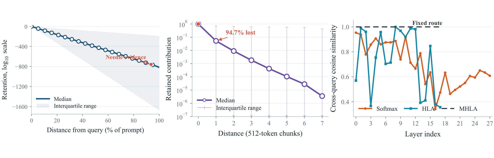
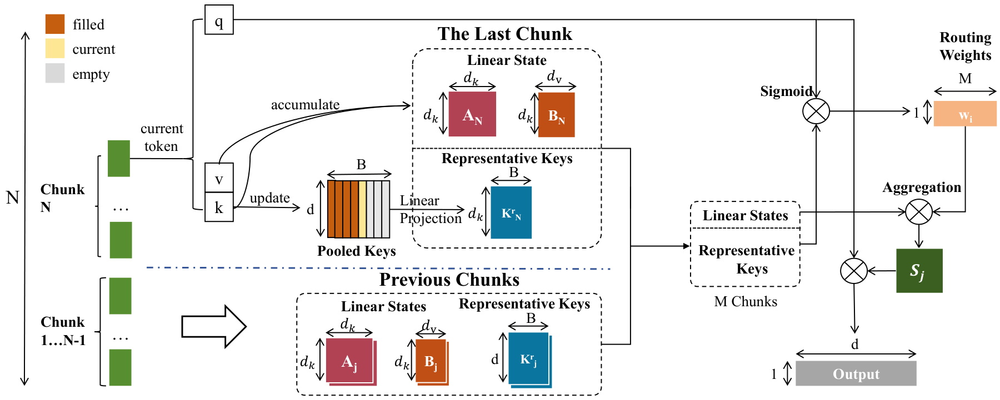

Summarize
Represent each completed chunk by an affine state transition and pooled routing keys.

Linear attention enables efficient long-context autoregressive decoding by compressing history into recurrent states, but this compression can make selective access to sparse and distant information difficult. Existing chunk-based extensions increase memory capacity, yet learned chunk-mixing coefficients may remain fixed with respect to input content and therefore cannot adapt historical access to each query. We introduce Hybrid Linear Attention (HLA), a query-dependent chunk-level attention mechanism for Gated DeltaNet (GDN). HLA represents each completed chunk as an exact affine state transition and computes content-dependent routing gates from compact, self-attentively pooled representatives. Each gate interpolates the corresponding historical transition with the identity map, controlling both the chunk’s additive memory and its transformation of earlier states. Effective-support regularization further encourages concentrated routing for sparse inference.
We evaluate HLA under both pretrained adaptation and from-scratch training. Across Qwen3.5 models from 0.8B to 9B, HLA consistently improves over native GDN and fixed chunk mixing, with gains of up to 5.57 percentage points on LongBench-V2 and 3.97 points on RULER. In a controlled from-scratch 1.3B setting trained for 100B tokens with a 4K context, HLA also improves RULER performance from 4K to 32K, with gains increasing from 0.83 points at 4K to 4.22 points at 32K. These results demonstrate that query-dependent composition of recurrent memory improves long-context modeling and remains effective beyond the training context while using compact per-chunk affine summaries.

A zero gate skips a chunk’s transition; a unit gate retains it. Gating both the multiplicative and additive terms lets HLA preserve earlier information when a historical chunk is irrelevant.
Represent each completed chunk by an affine state transition and pooled routing keys.
Compute query-dependent gates from compact pooled keys.
Interpolate historical transitions with identity and compose them in chronological order.
GDN and HLA use the same 1.3B-scale architecture, 100B-token training budget, and 4K training context. Scores below are RULER macro averages over all 13 tasks, with 500 matched examples per task and context length.
| Context | GDN | HLA (ours) |
|---|---|---|
| 4K | 24.63 | 25.46 |
| 8K | 15.02 | 17.69 |
| 16K | 7.98 | 11.05 |
| 32K | 3.65 | 7.87 |
RULER macro averages.